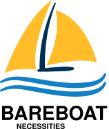

PDF version:
1. Getting Started
1.1. Why use BBN OS?
Why use BBN OS? Some people use just commercial marine electronics on board, some ones use smart tablets and marine Wi-Fi multiplexers. All these solutions lack one important component - an onboard computer capable of monitoring and controlling all aspects of the boat systems, and capable of storing data. Some people put Intel-based computer for that. Intel-based solutions are more power consuming. With BBN OS you can build a central boat computer meeting your needs. All on low power consuming raspberry pi with flexibility of adding countless choices of sensors to talk to all boat systems, Internet, local Wi-Fi, cameras, NMEA network, and a system able to decode marine radio protocols. BBN OS is free and open source. It is based on commonly used community supported open source projects such as SignalK, PyPilot, OpenCPN, and others. BBN OS graphical user interface will let you build a cockpit front-end to all functionality of the OS from chartplotting, dashboards, weather information, to media player, etc.
1.2. Download Image
Download SD card image (~2.5 Gb file):
1.2.1. 32-bit vs 64-bit images
-
There are pros and cons to each
-
32-bit takes less memory but runs slower
-
32-bit is more supported at the moment (Some cameras not supported on 64-bit yet at the time of writing this)
-
QtVlm, wx2img, many OpenCPN plugins are 32-bit only (at the time of writing this)
-
You still can run 64-bit kernel with 32-bit image, user space programs will be 32-bit. (Add arm_64bit=1 into /boot/config.txt)
-
32-bit is available on more hardware
-
64-bit OS and OpenCPN are working fine but technically still called 'beta'
-
Most of the open (minor) issues are present in both 32 and 64-bit images
| Switch from 32-bit kernel to 64-bit kernel has an impact on java installation. See (workaround): https://github.com/bareboat-necessities/lysmarine_gen/issues/44 |
So as of time of writing this the best performance/compatibility is the 32-bit image with the kernel switched to 64-bit.
-
Install 32-bit image
-
Upgrade and install all additional plugins for OpenCPN via OpenCPN plugin downloader after updating the catalog.
-
Switch to 64-bit kernel in /boot/config.txt
-
Proceed with all other configuration steps.
1.3. Prepare SD Card
Write the downloaded image to SD card. You can use Raspberry Pi Imager for that:
If your screen resolution is lower than 1024x600 you would need to manually set it in /boot/config.txt file, by mounting /boot partition of your SD card (on windows its done just by inserting it into SD card slot and editing in a plain text editor).
1.4. First Boot from SD Card
Insert SD card into raspberry pi SD card slot and power on. Wait for boot process to run GUI (about 2 mins).
1.5. Setting up Network
1.5.1. Wired Ethernet
If you have wired ethernet router you can just plug-in your raspberry pi ethernet port into the router
1.5.2. Wi-Fi Client
Go into network settings menu and delete Wi-Fi wireless access point.
| You need to set up Wi-Fi country. |
Change /etc/wpa_supplicant/wpa_supplicant.conf to add line for your country (example):
country=USChange /etc/default/crda to set your country (example):
REGDOMAIN=USWhen raspberry pi Wi-Fi card discovers your Wi-Fi router network click to connect to Wi-Fi and enter the correct Wi-Fi password.
When password storage manager pops up to enter the password for your password storage I just normally leave it blank, so I’m not prompted again.
1.5.3. Wi-Fi Access Point
Wi-Fi connections are managed by widely used Gnome NetworkManager. Look for 'nmcli' documentation (command line interface to NetworkManager). Or you can figure it out from Administration/Advanced Network Settings app menu. By default, OS image is set up to provide you an access point.
1.5.4. Typical Setup on a Boat
-
Raspberry Pi wired to OpenWrt LTE/4G/WiFi router via ethernet port
-
Raspberry Pi provides 5GHz WiFi 802.11ac local access point for boat local WiFi network
-
OpenWrt LTE/4G/WiFi router provides WiFi connection to marinas
-
OpenWrt LTE/4G/WiFi router provides access to the Internet via LTE/4G cellular data network
-
OpenWrt LTE/4G/WiFi router provides 2.4GHz (WiFi 802.11n) local access point for boat IoT devices
-
OpenWrt LTE/4G/WiFi router serves as firewall
If you use raspberry pi WiFi it is better to disable WiFi power management:
sudo systemctl unmask wifi_powersave@off.service
sudo systemctl enable wifi_powersave@off.service
sudo systemctl start wifi_powersave@off.service| It is important to protect your installation from unauthorized access from the Internet. Make sure you put your raspberry pi behind a router which adds a firewall protection. It is also important to change default passwords. |
1.6. Set Timezone / Locale
Open Terminal from GUI and on the terminal command line:
cd ~/add-ons
./timezone-setup.shFor changing locale (ex: to en_US.UTF-8):
sudo su
perl -pi -e 's/# en_US.UTF-8 UTF-8/en_US.UTF-8 UTF-8/g' /etc/locale.gen
locale-gen en_US.UTF-8
update-locale en_US.UTF-81.7. Change Password
Default user and root passwords are changeme. You would want to modify it.
Open Terminal from GUI and on the terminal command line:
cd ~/add-ons
./change-password.shTo change root password:
sudo su
passwd
exit1.8. International Keyboard
Keyboard layout controlled by pre-installed ibus application. To add a language:
ibus-setupI also disable it from showing up in system tray, and I rely on switching languages using onboard keyboard Win-Space key combo.
1.9. SSD Boot
If you have an SSD drive, and you would like to boot from it (which would be a better way, and it would greatly improve the performance of the system) then you can follow the steps below:
The OS image comes with utility called 'rpi-clone' preinstalled. If you have a custom case for your raspberry pi (Ex. DeskPi Pro), then you would need to install vendor drivers for your case per vendor instructions.
Open Terminal from GUI and your command line for rpi-clone should look like (check usage https://github.com/billw2/rpi-clone as there might be nuances for your particular set up):
sudo rpi-clone sdaFollow the prompts.
1.10. Set up GPS
Plugin your GPS USB mouse and OS should recognize it. Check:
ls -l /dev/ttyLYS*1.11. Set up AIS
Plugin your dAISy AIS receiver into USB and OS should recognize it. Check:
ls -l /dev/ttyLYS*1.12. Update OpenCPN Plugins
-
Start OpenCPN
-
Go to Tools/Options/Plugins
-
Update Plugin Catalog
-
Browse plugins list and update plugins when an update available (one by one)
| Due to a bug in OpenCPN https://github.com/bareboat-necessities/lysmarine_gen/issues/53 Updating plugins on a system booted with arm64 kernel doesn’t work even if userspace is armhf. As a workaround: boot with armhf kernel, update all plugins and only then switch to arm64 kernel |
1.13. Set up Charts
OS image comes with several chartplotters:
-
OpenCPN
-
AvNav
-
Freeboard-SK
-
TukTuk
with extensive set of plugins as well as weather GRIB file viewers
-
XyGrib
1.13.1. OpenCPN
-
Start OpenCPN. Go into Tools/Options/Charts/Chart Downloader tab.
-
Click 'Add Catalog'. For USA: click USA NOAA & Inland Charts / ENC / By Region.
-
Pick your region, click (or touch) 'OK'
-
Click 'Update' (to update the catalog)
-
Click 'Download Charts…' tab
-
Right-click (or long touch) in the charts list
-
Click 'Select all' from the pop-up menu
-
Press 'Download selected charts' button, and wait for it to finish
-
Press 'Apply' button
-
Click 'Chart Files' tab
-
Press 'Prepare all ENC Charts' button
-
Press 'OK' button when done
O-Charts can be registered using preinstalled OpenCPN plugins (on arm32 user space make sure to update plugins on-line from OpenCPN catalog) with O-Charts USB dongle or key.
1.13.2. AvNav
When you are online NOAA raster MB tiles should work out of the box. O-Charts can be registered using AvNav plugin with O-Charts USB dongle or key.
1.13.3. SignalK, FreeBoard-SK, TukTuk
Follow SignalK documentation to install offline charts for these.
1.14. SignalK
SignalK manages its own updates. Login into SignalK Marine Data Server web UI application and perform updates via its app store.
For SignalK support visit: https://signalk-dev.slack.com/
1.15. PyPilot
Starting PyPilot server:
sudo systemctl enable pypilot@pypilot
sudo systemctl start pypilot@pypilot1.16. Weather
You can add weather budgie desktop applet. Unfortunately it is linked to a fixed location which is fine for a day-sailor but doesn’t work for others.
Off-shore sailors or even coastal cruisers should focus on using XyGrib and GRIB plugin for OpenCPN.
For real blue water sailors OpenCPN Climatology and OpenCPN weather routing plugins are essential.
1.17. Music Players
The OS image comes with Mopidy, MPD server, MusicBox, Shairport-Sync (AirPlay) server. The default audio output set up to audio jack port.
1.17.1. MusicBox
Start MusicBox web UI. Try pre-configured playlist, or you can search Tune-In or YouTube.
1.17.2. Playing from your iPhone (Spotify, etc)
Play music on iPhone. Select AirPlay on your iPhone and cast to 'lysmarine' airplay target (your phone must be on lysmarine-hotspot WiFi).
1.17.3. Playing from mobile phones with MPD applications
Install MPD compatible media player on your mobile device and from it you can control playing your Mopidy library on your raspberry pi.
1.17.4. Playing Spotify
Start yoour Spotify app on your mobile device which is connected to boat WiFi. Select 'Lysmarine' device as target to play on pi via raspotify. You need to have a premium Spotify account.
1.18. Interfacing with ship systems
The first place to start configuring boat interfaces would be SignalK. SignalK comes with many plugins to talk to many boat devices with the support of various protocols.
1.18.1. NMEA 0183
If you use FTDI USB serial to USB sticks the OS should recognize them right away, and if they are wired correctly to NMEA devices (ex: wind/depth/speed/GPS) their reading should automatically show up in instrument dashboards.
1.18.2. NMEA 2000
Check SignalK plugin settings and SignalK documentation.
1.18.3. IMU
Check PyPilot settings and PyPilot documentation.
General steps are
-
enable i2c (Interface options)
cd ~/add-ons
./os-settings.sh-
Enable pypilot service
sudo systemctl enable pypilot@pypilot
sudo systemctl start pypilot@pypilot-
At this point you should be able to see reading of pitch/roll, etc, and magnetic heading in pypilot control. Which you would need to calibrate.
-
Start pypilot calibration. Press 'Boat Level' when the boat leveled. (Your IMU must be obviously mounted hard to the boat, can’t be just hanging). For magnetic heading: IMU doesn’t know how you oriented it inside (where bow is pointing), so you need to adjust it by filling magnetic heading adjustment field.
-
Establish connection from PyPilot to SignalK (restart PyPilot just before doing it to get a fresh valid request)
-
Go to SignalK web UI as admin and approve the access request from PyPilot for READ/WRITE access.
-
IMU data should start flowing into SignalK
1.18.4. Barometer / Temperature / Humidity
Check SignalK plugin settings and SignalK documentation.
General steps are:
-
enable i2c (Interface options)
cd ~/add-ons
./os-settings.sh-
To check if it’s working:
lsmod | grep i2c-dev
i2cdetect 1-
Login into SignalK Marine Data Server
-
Enable BMP or BME sensor plugin. Give it correct i2c address. Reduce poll timeout to 20 sec.
-
Change 'salon.inside' to 'outside' (one word) for OpenCPN to display readings.
-
Restart SignalK server.
-
At this point you should be able to see barometric pressure and temperature (possibly humidity) in your data feed.
1.18.5. Other
Many other devices are supported (usually via SignalK)
1.19. Instrument Dashboards
1.19.1. OpenCPN
Enable OpenCPN 'Dashboard' plugin, add instruments. Dashboards are dockable to the right on bottom of OpenCPN canvas.
1.19.2. KIP
-
Load KIP demo. In setting of KIP dashboard change the URL to http://localhost:3000
-
You should request KIP token to be registered in SignalK, then go into SignalK app and authorize it. After that edit instruments and layout in KIP dashboard settings.
1.20. Remote Access
1.20.1. VNC
OS image comes with VNC pre configured. Default password is changeme. You can change default password by removing /home/user/.vnc/passwd file and running
x11vnc -usepw(Hit CTRL/C after changing password).
sudo systemctl restart vncOS image also provides VNC client app.
RealVNC with cloud connectivity
By default BBN OS comes with x11vnc server which works fine for a local network access. If you want remote desktop access from Internet then you might install realvnc server instead:
sudo systemctl stop vnc
sudo systemctl disable vnc
sudo apt-get -y install realvnc-vnc-server
sudo systemctl enable vncserver-x11-serviced.service
sudo systemctl start vncserver-x11-serviced.service
rebootCreate an account on realvnc.com website. Login from your pi’s RealVNC server into realvnc.com cloud using the account you set up. Set-up a password on your pi’s VNC server for users to connect. While being logged in into realvnc.com website create a team and invite people you want to have remote desktop access to your pi. When they accept your invite let them know the password to connect to your local VNC server. They would need to download realVNC viewer (can be for PC, Linux, Mac, etc) and follow the instructions from the invite.
1.20.2. ssh
OS image comes with ssh enabled. You can log in using ssh user: 'user'.
1.20.3. Android Devices
OS image comes with scrcpy pre-installed and pre-configured. You can view and control your Android devices. You need to enable USB debugging on your Android device or follow the instructions to enable controlling it via WiFi. See: https://github.com/Genymobile/scrcpy In most cases you just need to enable USB debugging on your Android device and plug it in (thanks to autoadb).
1.20.4. Browsers
The URLs of the applications on your boat computer:
-
http://lysmarine:8080 PyPilot
-
http://lysmarine:3000 SignalK
-
http://lysmarine:8099 AvNav
-
http://lysmarine:6680 Mopidy Music Box
-
http://lysmarine:8765 MotionEye Cameras
1.21. Marine Radio
OS image comes with many HAM radio applications, decoders for many marine specific signals and protocols. Many SDR products should work. Decoding is also possible using external HAM receivers connected via sound input port (USB sound card required as raspberry pi doesn’t have built-in sound input). Proper antennas required for correct reception.
1.22. Cameras
1.22.1. IP Cameras
Should be easy to integrate using pre-installed VLC. See URL in /var/www/bbn-launcher/bbn-launcher.js
IP cameras usually have some delay in video display.
1.22.2. Connecting cameras to CSI on raspberry pi
Geekworm Raspberry Pi Hdmi-in Module, Hdmi to CSI-2 could be used to solve distance issue with CSI cameras.
Another trick with Arducam CSI to HDMI Cable extension is for CSI cameras to connect to raspberry pi over longer HDMI. You can’t use HDMI camera, HDMI is used merely as wire signal extension for CSI.
1.22.3. Low light vision
Sionyx has some boating oriented solutions: https://www.sionyx.com/pages/boating
Image stabilization for boat movements is an important factor too.
1.22.4. MotionEye
By default, motioneye service installed and enabled. To disable:
sudo systemctl disable motioneye
sudo systemctl stop motioneye
sudo systemctl status motioneyeDefault user: admin
Password is empty.
1.23. Cruising within Cellular Phone Reception
Adding some OpenWrt LTE/4G router greatly improves your boat connectivity to the world near shore. You should definitely do it to have internet access from your boat.
The OS image gives you internet applications for:
-
Email
-
Chat
-
FB
-
YouTube
-
Browser
-
On-Line Weather
-
On-Line Charts
-
Marina Booking
-
Sailing Education
-
SMS
-
and much more
1.24. Offshore Features
For offshore sailors there are number of features pre-loaded into the OS image
-
NavTex
-
Inmarsat Fleet (receiving messages)
-
Using Iridium as modem
-
WeatherFax
-
GRIB (could be over SSB)
-
AirMail / WinLink
-
SDR / HAM Radio Apps
-
AIS
-
Weather Routing / Climatology
-
Celestial Navigation
-
Autopilot (PyPilot)
-
Satellite Weather
-
Radars (several supported)
-
Location Reporting
They do require additional hardware, set up and dedication.
1.25. Watching Movies
Watching on-line (or listening) prepaid copyrighted content (Netflix, Amazon PrimeVideo, Google, Spotify, etc) in a web browser as Chromium requires closed-source DRM libraries. On arm32 version of the OS you can install it from add-ons folder ~/add-ons/ by running:
./widevine-lib-install.sh| As of moment of writing this procedure doesn’t work on arm64. It does work on arm32, and even on arm32 with 64-bit kernel. |
1.26. How it is Made
For those who are comfortable writing software the scripts to create this image stored on the image itself (for the reference) in /install_scripts. The full source code to create the image is available at: https://github.com/bareboat-necessities/lysmarine_gen
1.27. Shutting Down / Rebooting
On the desktop click arrow to get to the second set of desktop icons. Click on the 'Commands' icon. You will see a menu from where you can perform restart/shutdown, and more.
1.27.1. Safe Power-Down
Raspberry pi doesn’t have a safe power-off feature. I.e. it doesn’t perform OS shutdown before powering off with a button. There are numerous third-party solutions with raspberry pi hats or custom cases. Make sure you do not forget to install required software for them per vendor documentation.
1.28. Customizing Desktop
Desktop can be customized by editing the JavaScript file in /var/www/bbn-launcher.
PyPilot web client looks better in dark skin. Switch to the dark theme if it wasn’t done for you automatically.
1.28.1. Customizing Applications Menu
Applications menu can be customized by editing gnome-applications.menu in ~/.config/menus.
1.29. Customizing On First Boot
You can add additional customizations which will be performed on system first boot by mounting OS image and editing /boot/first-boot.sh script. That script as its name suggests executes only once on the first boot.
1.30. Known Issues and Workarounds
If GPS is lost in OpenCPN the first thing to try is to restart SignalK. You can do it from touchscreen via desktop 'Commands' icon.
Do not create data loops with your data flows between OpenCPN, AvNav, SignalK, GPSd, Kplex, PyPilot.
1.30.1. Touchscreen
-
Some applications (namely OpenCPN and gtk2 based as well as some Qt) sometimes stop responding to touch events. There is a workaround. With your finger you can toggle maximized mode via window frame icon then you MOVE the window frame by dragging window header few pixels, and switch back to maximized mode if needed. This should restore touch events in that app.
-
Some gtk3 applications menus (ex: terminal) have issues handling touch events. You can select a menu item with touch but to perform a click on it you would actually need to perform simulated right click by holding finger a bit longer and letting it go.
1.31. Add-ons
Check /home/user/add-ons directory. It contains number of scripts for installing many additional programs which for one or another reason couldn’t be a part of the distribution image.
1.32. Default Ports
See:
sudo netstat -tulpenProto Port Transport Program/Service
tcp 22 ssh sshd Secure Remote Shell
tcp 25 smtp exim4 e-mail
tcp 139 netbios smbd
tcp 445 smb smbd
tcp 631 CUPS cupsd Printing
tcp 2947 gpsd gpsd
tcp 3000 http/WS SignalK
tcp 4713 pulseaudio pulseaudio audio
tcp 4997 http bbn-desktop
tcp 5000 airplay shairport-sync music
tcp 5037 adb android adb
tcp 5900 vnc x11vnc
tcp 6600 mpd Mopidy MPD Music
tcp 6680 http Mopidy Music
tcp 8080 http PyPilot_web
tcp 8082 http AvNav Ocharts
tcp 8085 http AvNav Updater
tcp 8099 http AvNav
tcp 8375 http/json SignalK Deltas
tcp 8765 http motioneye
tcp 10110 NMEA 0183 SignalK
tcp 20220 NMEA 0183 PyPilot
tcp 23322 json PyPilot
tcp 34567 NMEA 0183 AvNav NMEA out
tcp dynamic spotify librespot
udp 68 DHCP dhclient
udp 137 nmb nmbd
udp 138 nmb nmbd
udp 323 ntp chronyd time service
udp 631 IPP CUPS Internet Printing Protocol
udp 5353 service discovery avahi-daemon, chromium, others (bonjour, zeroconf, mDNS)
udp 10116 NMEA 0183 AvNav, KPlex1.33. Suggestions
The beauty of Linux is that you can customize it for your needs in infinite ways. While this distro aimed to strike common need, you will find that number of post-install customization steps would be required. The key is to script those steps, make them non-interactive, make the steps requite NO GUI. In that case your set up becomes REPRODUCIBLE in case of new OS image releases. You can share your post-install scripts, so the system can be improved and even more fine-tuned.
While the system supports touchscreens during set-up phase you would still want to have a regular wired keyboard and mouse attached to it as there is plenty of activities involved on the shell command line.
You do not have to be a software engineer to install the system. A mechanic, electrician, paralegal professional, civil engineer, money manager are few examples of people with different backgrounds who were able to install and set it up for their boats.
1.34. Hardware
This is not my first build of the boat computer with raspberry pi. A lot of ideas can be taken from my older (2020 build which was based on OpenPlotter). For up-to-date build I would change few things:
-
Instead of expensive Argonaut M7 I would have used (Model: SL07W, Brand Sihovision, Capacitive Touch Screen 7 inch, (1000 nits), IP65, 1024x600, Cost under $300): https://www.sihovision.com/industrial-touch-monitor/7-inch-industrial-wide-temperaturer-lcd-monitor-with-remote-control-1.html
-
My waterproofing technique would be cheaper and better. Instead of costly connectors at the back of the computer (even if it is below deck) I would use waterproof glands for exits from the enclosure and pigtail connectors. I would cover the point of connection with heat shrink tubing.
-
I would have used some kind of safe power-off solution and SSD instead of just SD card. SSD gives HUGE performance gain.
-
I would use this OS image (instead of OpenPlotter image)
-
dAISy AIS is better solution than SDR
-
Use USB 2.0 hub where USB 3.0 not required
For older hardware solutions (lot of it is still valid) see:
1.35. Most useful features for average short cruises
-
GPS, OpenCPN off-line charts for your sailing area
-
IMU Compass
-
Tides / Currents in OpenCPN
-
Waypoints, routes in OpenCPN, tracking
-
AIS in OpenCPN
-
Weather Windy, etc if using LTE internet
-
Music players
-
Dashboards Wind, Speed, Depth, GPS, Local Sunset, etc
-
Barograph
-
Autopilot (if equipped)
-
Cameras for docking and night light
-
Local boat WiFi hotspot and LTE gateway
1.36. IoT
1.36.1. Mosquitto MQTT Server
BBN OS image comes with Mosquitto clients and server preinstalled but disabled. To enable and start it:
-
Enable and start Mosquitto server (on default port 1883)
sudo systemctl enable mosquitto sudo systemctl start mosquitto -
Subscribe to topics
mosquitto_sub -t '#' -
Publish from SignalK: Enable MQTT Gateway plugin. Pick 'Send data to remote server' with URL mqtt://localhost. Add topic (Ex: navigation.headingMagnetic). Restart SignalK and observe the data stream in the subscriber.
1.37. Data Analytics
1.37.1. Grafana
BBN OS image comes with grafana preinstalled but disabled. To enable and start it:
-
Edit the /etc/grafana/grafana.ini file and change line ';http_port = 3000' to 'http_port = 3080' (to avoid conflict with SignalK)
sudo nano /etc/grafana/grafana.ini -
Enable and start Grafana server
sudo systemctl enable grafana-server sudo systemctl start grafana-server -
Access http://localhost:3080 with user and password 'admin'.
1.37.2. InfluxDB
-
Enable and start InfluxDB server (on default ports 8086 (client-server), 8088 (RPC))
sudo systemctl unmask influxdb.service sudo systemctl enable influxdb sudo systemctl start influxdb -
Initialize database and connect to it (for example) from SignalK barograph plugin.
1.38. HOWTOs
Please send us your HowTo, and we can add it here for everyone to find. Thanks
1.38.1. BerryGPS-IMU V3
-
Install the BerryGPS-IMU V3 hat
-
Follow steps to enable i2c and disable serial port https://ozzmaker.com/berrygps-setup-guide-raspberry-pi/
-
Remove serial console mentioned in /boot/cmdline.txt (argument with serial0 and baud rate)
-
Reboot
-
sudo i2cdetect -y 1 (should show you addresses)
-
Create pypilot connection to signalK (see https://bareboat-necessities.github.io/my-bareboat/bareboat-os.html#_imu )
-
Set up barometer feed from SignalK ( https://bareboat-necessities.github.io/my-bareboat/bareboat-os.html#_barometer_temperature_humidity )
-
IMU data heading etc should come from pypilot NMEA
-
check it with telnet localhost 20220
Brief explanation:
-
i2c should be enabled, serial console disabled in config.txt
-
i2c driver should be loaded at boot (that’s what raspi-config step does)
-
At this point you should have data readable from GPS (via /dev/serial0) and IMU / barometer (via i2c)
-
Now you set up routing of this data into dashboards, chartplotters
-
IMU is read by pypilot, which feeds it via 20220 tcp port using NMEA 0183 format
-
pypilot also needs to have connection via SignalK web socket to port 3000 of signalK
-
That connection needs to be authorized made READ/WRITE in signalK using their token exchange procedure
-
GPS is read by signalK by creating NMEA connection to /dev/serial0 port (set correct baud rate)
-
Barometric/temp data is read by SignalK using signalK BME280 plugin. Make sure setting polling interval below 30 seconds (because OpenCPN expires non-navigational data every 30 seconds)
-
Calibrate level IMU on water. Calibrate your IMU compass, using pyPilot calibration utility.
-
I use external GPS antenna with it (It needs to be an active antenna). There is a jumper/or switch on the Berry board to choose external antenna
| Cellular, GPS, WiFi Antenna (3 in one), Model AFCJF3, Price $80 Designed for marine and recreational vehicles (RV), this multi-band Cellular, GPS, WiFi Antenna (696 MHz - 5900 MHz / 5.9 GHz) is a 3-way omni-directional, IP67 waterproof antenna for harsh environment communication applications. https://www.signalbooster.com/products/cellular-gps-wifi-antenna |
Check with commands:
sudo i2cdetect -y 1
should show addresses on the bus, then
systemctl status pypilot@pypilot
should show that pypilot service as enabled, running and has no errors
telnet localhost 20220
should show stream of heading NMEA data from pypilot
telnet localhost 10110
should show both GPS and heading NMEA sentences from SignalK.
Also, check this FAQ for common berryGPS issues:
disabling echo on serial port might be required, as well as enabling ZDA NMEA time sentence.
ublox GPS receivers have extensive configuration. Check: https://gpsd.io/ubxtool-examples.html
1.38.2. RTL8812AU drivers
Following these steps it compiled fine from the first attempt https://github.com/aircrack-ng/rtl8812au
There is also a script to install various additional WiFi cards drivers
cd /home/user/add-ons
./wifi-drivers-install.sh